Digital prototyping for design¶
“Everything in life has a datasheet. If it doesn’t have a datasheet, don’t trust it.” - Eduardo
“Sure, I’ll come up for a cup of tea.” - Me, having had “a really nice time tonight”, trusting something without a datasheet.
initial thoughts (after the first few days)¶
This course is designed to teach skills that I’m especially interested in developing: designing, prototyping, and iterating things and systems using digital design tools (2D/3D modeling for automated distributed manufacturing, open source electronics for rapid prototyping of IoT and other devices). Given my non-design background and limited modeling experience, this course is an opportunity for me to learn some of those skills. I’ve also read quite a bit, and played a little bit, with many of the technologies concerned, but in a way which was usually not in-depth enough to make an actual project out of it. At this point in the course, I have already learned some of the technical details and methods involved. I’m excited for the hands-on sprints, which will - I hope - force me to go more in depth while learning methods for relatively structured prototyping.
coding, open source, and rock’n’roll - day 1¶
As is typical for a class with Victor (which I always enjoy a lot), this day was about understanding and using open hardware electronics, coding, and the value of open knowledge.
I enjoyed the digression on the damage patents can and have wreck(ed). I hope to learn more about the negatives of that approach, alternatives, and mitigation strategies in upcoming sessions.
Other than that, being relatively familiar with the basics of programming, I especially focused on the parts on electronics, and learning the very concrete aspects of using an Arduino. It is somewhat disheartening to me that it took a formal Master’s to really commit to learning about using such devices (despite having them available at home previously). I obviously have not ‘killed the bureaucrat in my head’ thoroughly enough up to now. However, some structure,and - much more importantly - having people around to collaborate and to share the experience with really helps. This course in particular, and MDEF in general, have really reinforced my belief that doing things together (or at least next to each other) is in most cases preferable to doing them alone.
As a playful exploration of programming Arduinos, we were asked to connect a buzzer and make it play some kind of music.
Here is what I came up with (together with my roommate, Myrto):
(the font will be - uh - fixed in a later update of this post…)
/*
based on: Ode to Joy - Beethoven's Symphony No. 9
Connect a piezo buzzer or speaker to pin 11 or select a new pin.
More songs available at https://github.com/robsoncouto/arduino-songs
Robson Couto, 2019
adapted by korbi and myrto february 2023. Added a increasing randomness / generative variation on the ode
*/
#define NOTE_B0 31
#define NOTE_C1 33
#define NOTE_CS1 35
#define NOTE_D1 37
#define NOTE_DS1 39
#define NOTE_E1 41
#define NOTE_F1 44
#define NOTE_FS1 46
#define NOTE_G1 49
#define NOTE_GS1 52
#define NOTE_A1 55
#define NOTE_AS1 58
#define NOTE_B1 62
#define NOTE_C2 65
#define NOTE_CS2 69
#define NOTE_D2 73
#define NOTE_DS2 78
#define NOTE_E2 82
#define NOTE_F2 87
#define NOTE_FS2 93
#define NOTE_G2 98
#define NOTE_GS2 104
#define NOTE_A2 110
#define NOTE_AS2 117
#define NOTE_B2 123
#define NOTE_C3 131
#define NOTE_CS3 139
#define NOTE_D3 147
#define NOTE_DS3 156
#define NOTE_E3 165
#define NOTE_F3 175
#define NOTE_FS3 185
#define NOTE_G3 196
#define NOTE_GS3 208
#define NOTE_A3 220
#define NOTE_AS3 233
#define NOTE_B3 247
#define NOTE_C4 262
#define NOTE_CS4 277
#define NOTE_D4 294
#define NOTE_DS4 311
#define NOTE_E4 330
#define NOTE_F4 349
#define NOTE_FS4 370
#define NOTE_G4 392
#define NOTE_GS4 415
#define NOTE_A4 440
#define NOTE_AS4 466
#define NOTE_B4 494
#define NOTE_C5 523
#define NOTE_CS5 554
#define NOTE_D5 587
#define NOTE_DS5 622
#define NOTE_E5 659
#define NOTE_F5 698
#define NOTE_FS5 740
#define NOTE_G5 784
#define NOTE_GS5 831
#define NOTE_A5 880
#define NOTE_AS5 932
#define NOTE_B5 988
#define NOTE_C6 1047
#define NOTE_CS6 1109
#define NOTE_D6 1175
#define NOTE_DS6 1245
#define NOTE_E6 1319
#define NOTE_F6 1397
#define NOTE_FS6 1480
#define NOTE_G6 1568
#define NOTE_GS6 1661
#define NOTE_A6 1760
#define NOTE_AS6 1865
#define NOTE_B6 1976
#define NOTE_C7 2093
#define NOTE_CS7 2217
#define NOTE_D7 2349
#define NOTE_DS7 2489
#define NOTE_E7 2637
#define NOTE_F7 2794
#define NOTE_FS7 2960
#define NOTE_G7 3136
#define NOTE_GS7 3322
#define NOTE_A7 3520
#define NOTE_AS7 3729
#define NOTE_B7 3951
#define NOTE_C8 4186
#define NOTE_CS8 4435
#define NOTE_D8 4699
#define NOTE_DS8 4978
#define REST 0
// change this to whichever pin you want to use
int buzzer = A0;
// notes of the melody followed by the duration.
// a 4 means a quarter note, 8 an eighteenth , 16 sixteenth, so on
// !!negative numbers are used to represent dotted notes,
// so -4 means a dotted quarter note, that is, a quarter plus an eighteenth!!
int melody[] = {
NOTE_E4,4, NOTE_E4,4, NOTE_F4,4, NOTE_G4,4, NOTE_G4,4, NOTE_F4,4, NOTE_E4,4, NOTE_D4,4, NOTE_C4,4, NOTE_C4,4, NOTE_D4,4, NOTE_E4,4,
NOTE_E4,-4, NOTE_D4,8, NOTE_D4,2, NOTE_E4,4, NOTE_E4,4, NOTE_F4,4, NOTE_G4,4,NOTE_G4,4, NOTE_F4,4, NOTE_E4,4, NOTE_D4,4,
NOTE_C4,4,NOTE_C4,4, NOTE_D4,4, NOTE_E4,4, NOTE_D4,-4, NOTE_C4,8, NOTE_C4,2, NOTE_D4,4, NOTE_D4,4, NOTE_E4,4,NOTE_C4,4,
NOTE_D4,4, NOTE_E4,8, NOTE_F4,8, NOTE_E4,4, NOTE_C4,4,
NOTE_D4,4, NOTE_E4,8, NOTE_F4,8, NOTE_E4,4, NOTE_D4,4,
NOTE_C4,4, NOTE_D4,4, NOTE_G3,2, NOTE_E4,4, NOTE_E4,4, NOTE_F4,4, NOTE_G4,4,
NOTE_G4,4, NOTE_F4,4, NOTE_E4,4, NOTE_D4,4,
NOTE_C4,4, NOTE_C4,4, NOTE_D4,4, NOTE_E4,4,
NOTE_D4,-4, NOTE_C4,8, NOTE_C4,2
};
void setup() {
Serial.begin(9600);
randomSeed(analogRead(0));
}
void loop() {
//randomSeed(analogRead(A12));
long randNumber;
//delay(1000);
// change this to make the song slower or faster
//int tempo= randNumber*7;
int tempo = 200;
// sizeof gives the number of bytes, each int value is composed of two bytes (16 bits)
// there are two values per note (pitch and duration), so for each note there are four bytes
int notes=sizeof(melody)/sizeof(melody[0])/2;
//calculating a random number b
// this calculates the duration of a whole note in ms (60s/tempo)*4 beats
int wholenote = (60000 * 4) / tempo;
int divider = 0, noteDuration = 0;
//a variable for a random number
for (int thisNote = 0; thisNote < notes * 2; thisNote = thisNote + 2) {
// calculates the duration of each note
divider = melody[thisNote + 1];
if (divider > 0) {
// regular note, just proceed
noteDuration = (wholenote) / divider;
} else if (divider < 0) {
// dotted notes are represented with negative durations!!
noteDuration = (wholenote) / abs(divider);
noteDuration *= 1.5; // increases the duration in half for dotted notes
}
// we only play the note for 90% of the duration, leaving 10% as a pause
tone(buzzer, melody[thisNote], noteDuration*0.9);
// Wait for the specief duration before playing the next note.
delay(noteDuration);
// stop the waveform generation before the next note.
noTone(buzzer);
//VARIATIONS - change random 5 notes in the melody
int randomNotesToBeAdded [] = {0,0,0,0,0, 0};
//making sure we're not selecting the length duration numbers in melody (eg. -4, 4, 8)
randNumber = random(100);
Serial.print("randNumber: ");
Serial.println(randNumber);
if (randNumber%2 != 0) {
randNumber++;
}
for (int i = 0; i <= 4; i++) {
randomNotesToBeAdded [i] = melody [randNumber + i*2];
}
//randomSeed(analogRead(A12));
long randomLocationInMelody = random(100);
Serial.print("randomLocationInMelody: ");
Serial.println(randomLocationInMelody);
//delay(1000);
if (randomLocationInMelody%2 != 0) {
randomLocationInMelody++;
}
for (int i= 0; i<= 4; i++) {
int j = randomLocationInMelody;
melody[j] = randomNotesToBeAdded [i];
j++;
}
}
}
The code is based on an existing project on github that plays famous melodies on a buzzer through an Arduino. What we added was a generative element, where, based on a pseudorandom number, the program modifies the melody, choosing among the notes present in the melody and replacing notes in the current melody by those notes. This has a recursive character, because the melody modified and chosen from is - at each run of the main loop - the one that came out of the previous run (if there is one).
One small detail that I found interesting is that someone on the internet recommended to use the input of a pin that is not connected to anything to generate ‘random’ noise. (and that’s what we did).
This activity reminded me how fun it can be to write code, especially when the quality is not that important. The code is not very well written or documented, and it would have been more elegant to write it in a way which is more adaptable for different purposes. In the coming weeks I hope to experience the joy of writing slightly more thought through code as well.
criss-crossing croissant curves - day 2¶
This session gave me a better understanding of computer assisted design and manufacturing. It was interesting to learn about the different tools -digital as well as physical - used in such processes.
What stuck with me the most were the advantages of parametric design (somewhat known to me before), simulation, topological optimisation (knew very little about it) and generative design (knew even less). It’s exciting to think about the potential (and current apploications) of these techniques for distributed design and local mass customisation. On a more personal note, the prospect of ‘outsourcing’ some of the engineering grunt work to a machine is very appealing. It makes designing something truly adapted to its environment seem much more feasible and less tedious than what I would have imagined. The complex and ‘organic-ish’ aesthetics of many (semi-autoomatically) topologically optimised and partly AI-generated design is also interesting. Modernist minimalism has it’s charm, but I’m starting to get bored of it (especially in its derivative / low effort forms).
As an initial, playful exploration of parametric design, we were asked to parametrise a croissant. Here is my attempt:
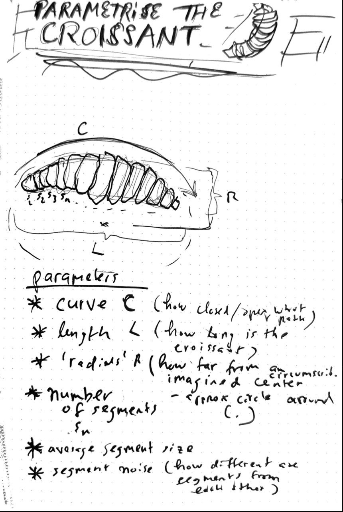
A further task was designing something using generative patterns.
Since I did this task after doing the day 3 task (see next section), I decided to try out a generative design approach to see if it could same some material while preserving functionality. This was the first time I used Fusion360, and the first time I engaged in a generative design exploration. I made a number of mistakes, some of which I probably haven’t even noticed. I would like to learn more about this topic.
Here is the simple load case I imagined for this study: 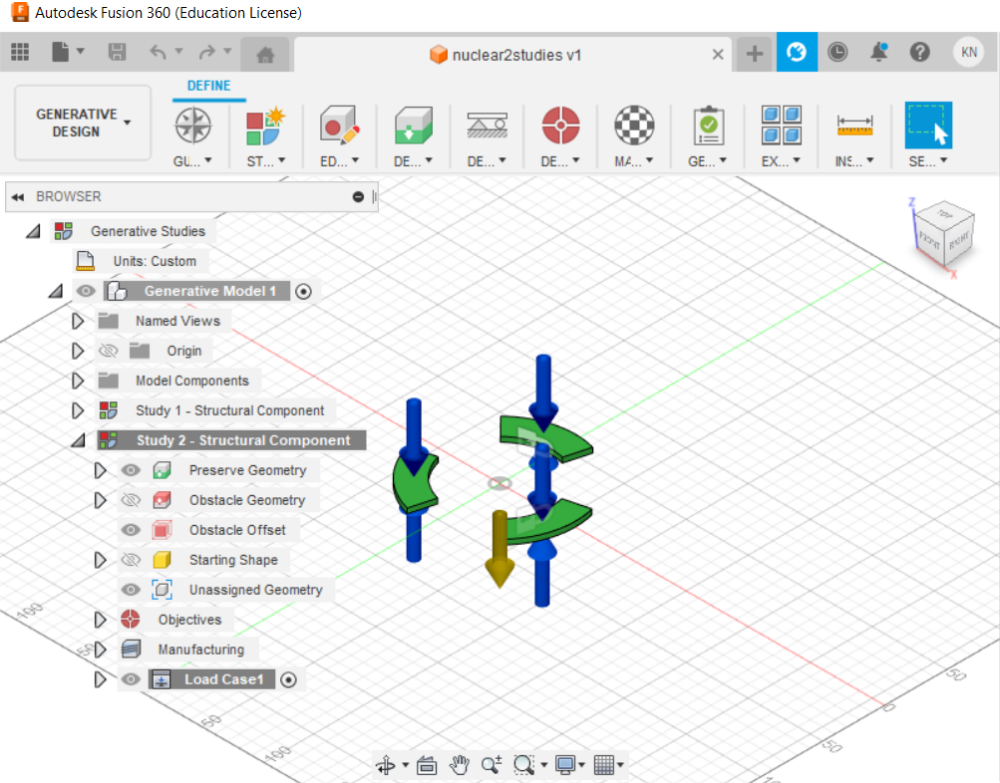
Here are some of the outcomes: 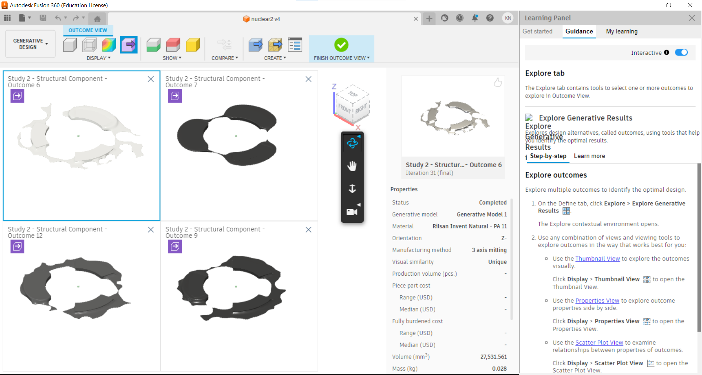 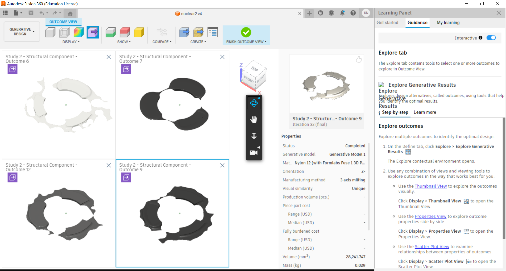 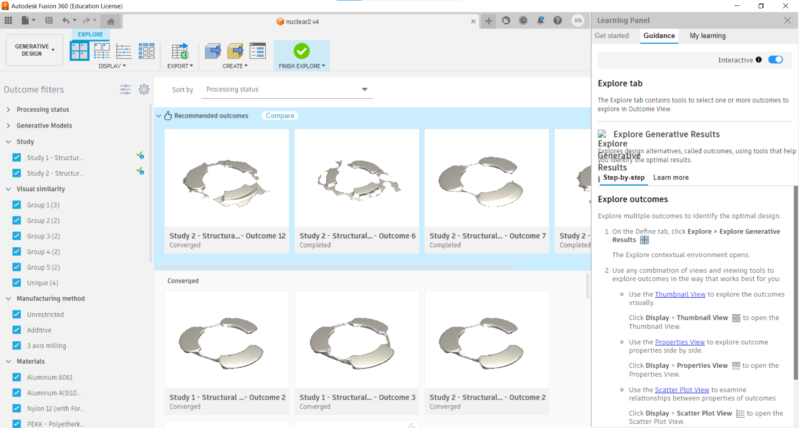
One of the mistakes I may have made is not making sure that the three parts of the part are connected. Perhaps this is due to the optimistically low loads I used, due to choosing slightly unrealistic materials (in a bit of a rush, I didn’t figure out how to add/find, e.g. PLA). Perhaps there is an option to force them to connect. Perhaps them not being connnected is not an issue. I don’t really know, but I will try to find out (by asking someone, googleing and by trying things out).
The following final design (for now), which I will try to print may give me some insight on how to proceed. Abstract things are always easier to imagine once they have an instantiation in physical reality…
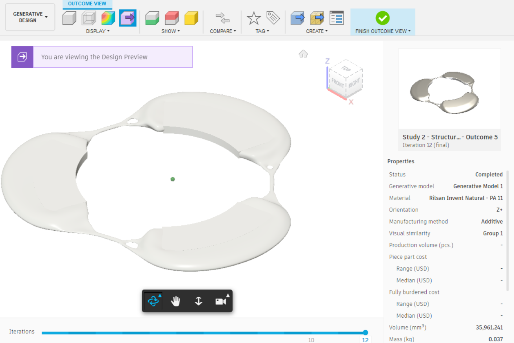
laser focused - day 3¶
This session built on the previous one, focusing on 2D modeling for CAM and the various ways in which 2D cutouts and other artefacts based on 2D designs can be leveraged to create 3D designs. I was especially struck by the aesthetics and functionality of ‘living hinges’. ]
We also learned about how the 2D machines in the FabLab work in practice. A side point I found interesting was anout the control the mannufacturer had over the ‘hobbyist’ vinyl cutter (they are able to make it completely unusable at a distance) - an example of the lack of control some contemporary devices (or rather, the companies selling them) push to the extreme. I’m looking forward to making stickers and silk printing frames with it anyway.
Originally I had been interested in using the laser cutters to cut through the flattened metal of aluminium cans. Using such an abundant waste material, which is also light, sturdy and aesthetically appealing seemed interesting. As part of one of my ‘interventions’, I’m looking to design light tubes (to transport sunlight from a window (or roof) to the interior of a dwelling).
Unfortunately, this may turn out to be more difficult than I thought. I will try to figure it out. But for now, I decided to try approaching the same challenge with cardboard. We were assigned the task of creating a design using interlocking elements. This fits my idea pretty well.
My first concrete exploration in this direction was making laser cut circles out of cardboard.
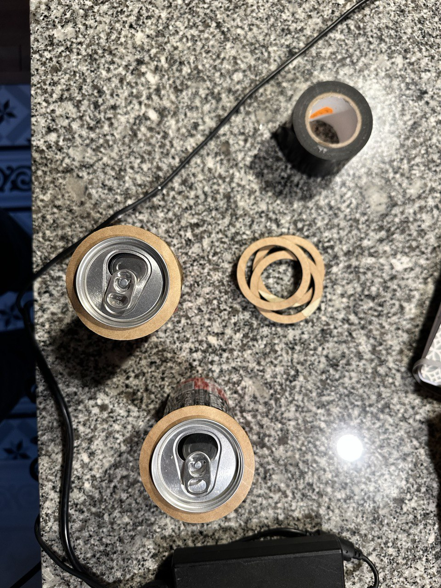
The idea is to use these cardboard circles to hold cans together like sections of a tube.
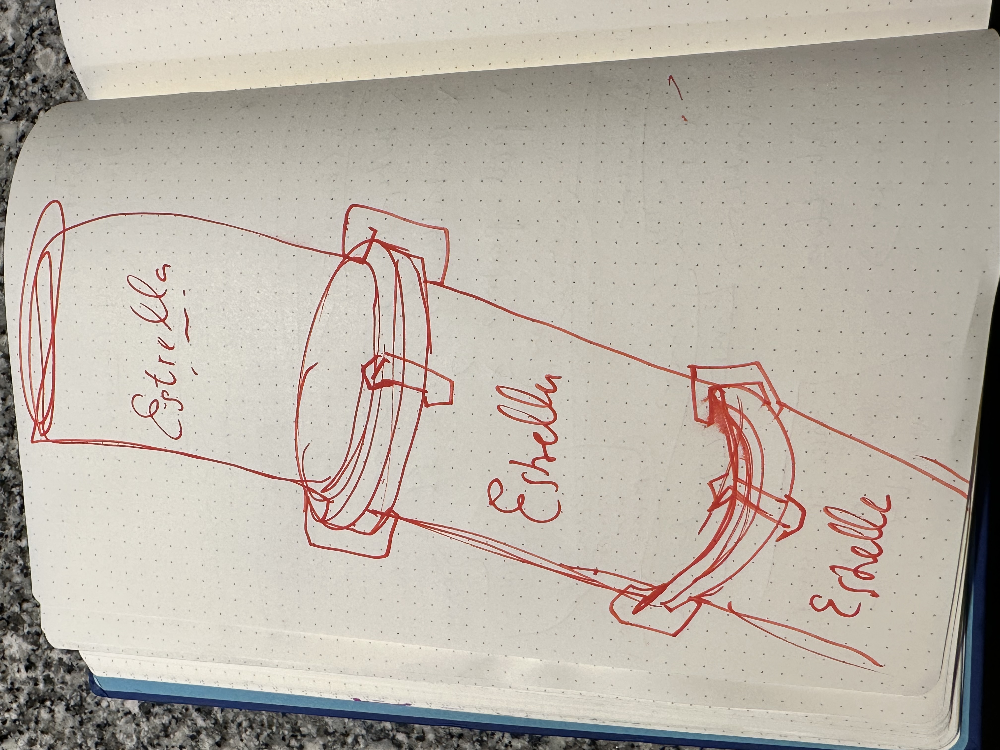
As I prototyped, I soon realised an important feature of cans that I had overlooked before: the thin ring that goes around the top. This meant that I couldn’t use the two rings as initially planned. However, the ring is very useful because it helps hold a joining element at the top. So, I modified my design to make something like this:
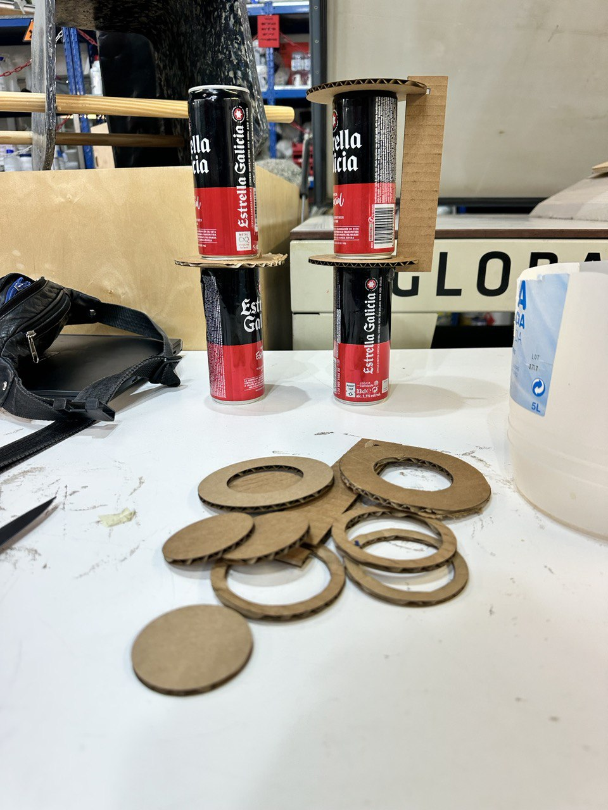
It took a while to get the diameter right (adjusting for the tolerance of the laser cutter, the material’s (cardboard) flexibility, etc. It was a bit tedious but somehow fun (and good to understand how involved such a seemingly extremely simple process can take - at least if you’re a beginner).
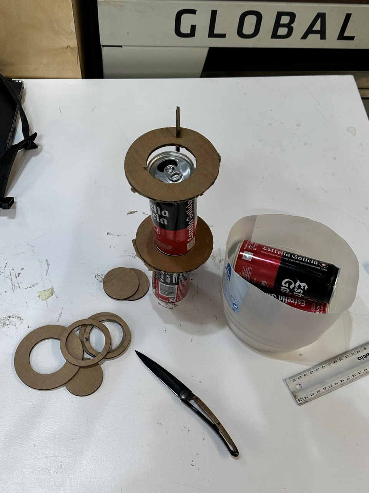
The final outcome (for now), looks like this:
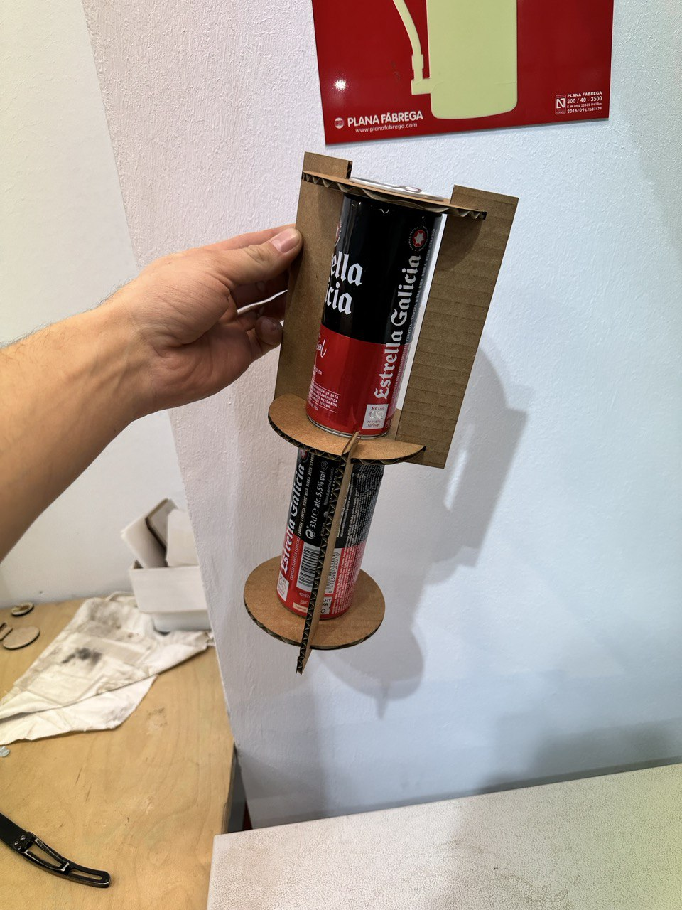
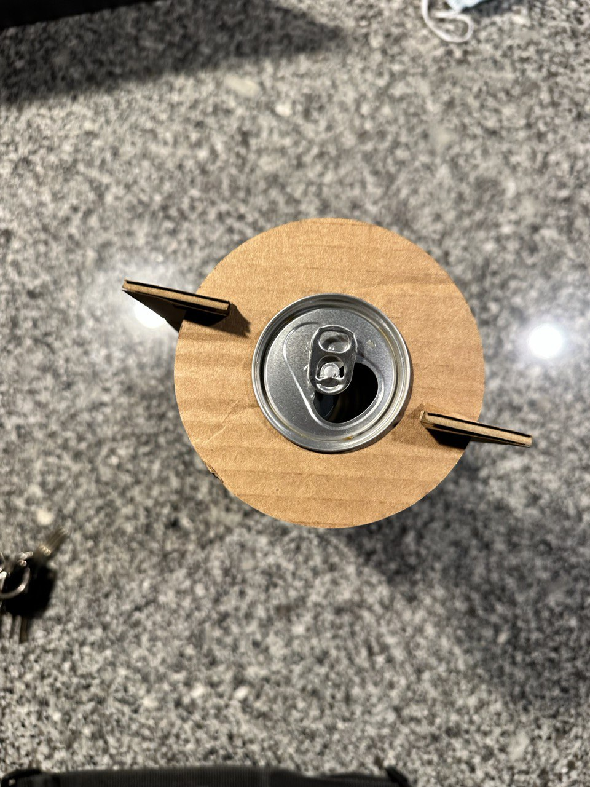
I’m planning on exploring this concept further, using different materials (e.g. wood) to make something more sturdy, and - if separate explorations on light refraction look promising - see if I can make the can tube water-tight.
bedding for your bidding - day 4¶
Unfortunately, I was unable to attend this class, even though the subject really interests me.
I tried the assigned exploration for this together with my roommate (Myrto). The deliberately incomplete instructions on the course documentation were helpful, but left us with some challenges to figure out ourselves.
We borrowed a friend and fellow student’s (thanks Stella) ESP32 and got to work. First, we connected the LED and light sensor circuits according to the diagrams. After some fiddling, they worked.
Then, remixing the available code, we tried to make a telegraph style communication system work. This worked up to a point. The button and the light sensor worked. With no knowledge of how others did this in class, we tried to discover how detecting the length of a light impulse could work. We thought that the following code would be good (it includes some commented out stuff we no longer need). The font will be fixed at some point, so you can copy and use it directly (reading should be ok?)
int R2 = 10000;
float VIN = 3.0;
unsigned long startTime = 0;
unsigned long endTime = 0;
unsigned long interval = 0;
int ledState = 0;
void setup() {
Serial.begin(9600);
}
void loop() {
// read the input on analog pin 0:
int sensorValue = analogRead(A3);
if (sensorValue>1000)
{
Serial.println("turn off the lights!");
delay(1000);
}
else
{
Serial.println("lights off, checking for LED...");
if (sensorValue > 100 && ledState == 0) //if the led turns on
{
ledState = 1;
Serial.println("the led turned on, I think!");
startTime = millis();
Serial.println("start time:");
Serial.println(startTime);
if (sensorValue < 100)
{
endTime = millis ();
Serial.println("end time: ");
Serial.println(endTime);
interval = endTime - startTime;
Serial.println("interval: ");
Serial.println(interval);
Serial.println("The LED is back off, I think!");
ledState = 0;
delay(1000);
if (interval < 1000)
{
Serial.println("SHORT");
delay (1000);
interval = 0;
}
else
{
Serial.println("LONG");
delay (1000);
interval = 0;
}
}
}
// Convert the analog reading (which goes from 0 - 1023) to a voltage (0 - 5V):
//float voltage = sensorValue * (3.0 / 1023.0);
// Get the value of R1
//int ldr = ((R2 * VIN) / voltage) - R2;
// print out the value you read:
//Serial.println(sensorValue);
//Serial.print("voltage: ");
//Serial.println(voltage);
//Serial.print("LDR value: ");
//Serial.println(ldr);
}
}
Unfortunately, this did not quite work. Part of the reason may be that the ligth sensor is subject to noise. We tried to implement a process where the user is prompted to turn off the lights when the sensor is sensing too much light. However, this sometimes got triggered when the LED got too close. It’s also likely that the code has some further issues, to be fixed on a rainy Sunday.
first challenge - sens_hort, water sensing for urban horticulture¶
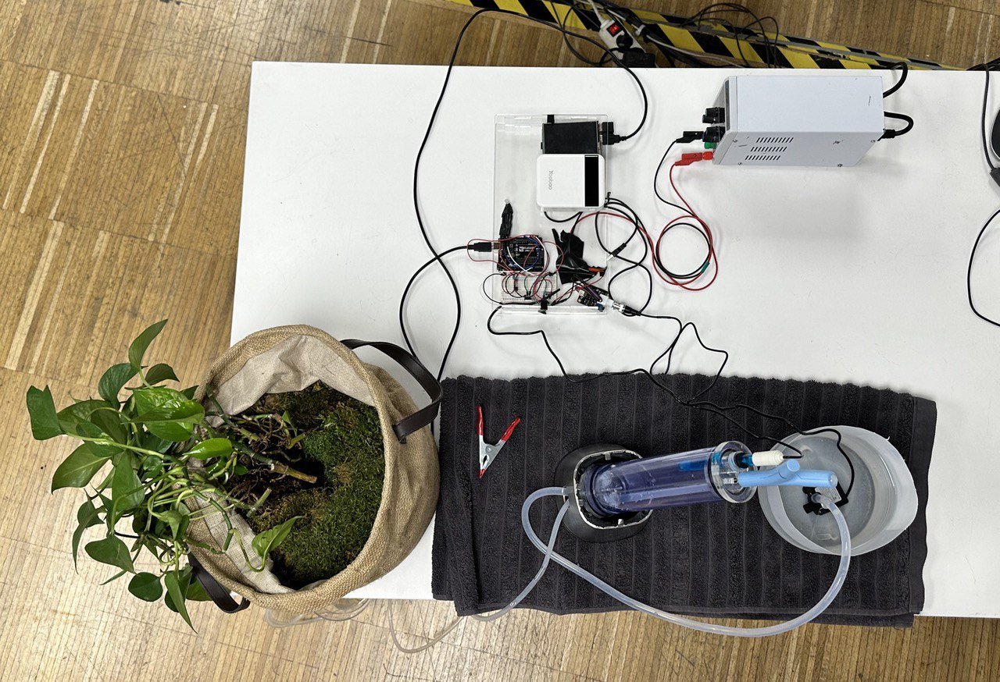 Our final prototype for this challenge
I wrote most of what I have to say about this in the collective document of my group (sens_hort). But here are some of my more personal thoughts.
Personally, I really appreciated using some of the Fab Lab machines for the first time. I had used a laser cutter before, but not one of this size. It turned out to be quite intuitive, once I got used to it. I found myself wishing I could continue cutting out things all day/night, and try them out. It was like debugging for physical things - better suited to my sensibilities than the discipline necessary for manual work of a similar precision.
The group I was a part of for this challenge was comparatively large (four people). After deciding the general design together, we split up in two groups of two, Cagsun and Ramiro focusing on the electronics, Josephine and me focusing on the enclosure / non-electronic physical design parts. Having some experience with writing code (though not so much in writing it for Arduino), and almost none in product design / laser cutter based making, I decided to be part of the latter effort so as to explore what I know least.
The sandwich approach we used to design a tap for a water-tight tube (layering three acrylic cutouts and adding a rubber ring to make a tap) was interesting to me. Using a laser cutter and designing in 2D seemed rather intuitive to me, so I was happy to discover some of the 3D applications of that.
I also gained a renewed appreciation for how involved it is to design any kind of object from scratch. Making the water sensing tube seemed like it would take less time than it did. As we went through the process of designing and making it, I felt some things accelerate. Personally, I get the feeling that it will be faster next time. Even though - at times - it was a bit discouraging to be reminded of how complicated manufacturing can be (as someone who would like to eventually transcend at least a significant amount of dependence on mass industrial production), I appreciated gaining more of a grasp on these topics. I also believe that we are beginning to see alternatives to centrally controlled extractive industry emerge, and I am hopeful that more mass customisation, decentralisation of control, distribution of production, etc is yet to come. Hopefully I can contribute to that in some way.
Please refer to the collective document for further reflections (I put most of them there).
All rise for the 3DP national anthem- day 5¶
This overview of various 3D printing and scanning techniques reinforced my fascination with the technique and clarified a few things for me. It confirmed some of the limitations of nice-sounding filaments (like ‘wood’ filament, that’s mostly plastic, or the relatively difficult process necessary to make anything out of metal with 3DP-based tecchniques). When I first heard about the technology as a easily enthused teenager lurking on the RepRap website without ever ending up building one myself, I had naive ideas about which kinds of materials would soon end up being printable. This session both confirmed my slightly disillusioned perspective (at least for distributed production at an affordable price) I had before taking part in it, but adding more nuance and some exciting perspectives on future prospects as well.
Some techniques, like Laminated Object Manufacturing, I had never heard about. Others, such as powder bed based methods, I had heard only very little. I’m planning on reading about these. I’m also eager to engage in the practical part of this (scanning and printing something), ideally trying a technique I did not engage with before.
…My first results looked like this. It is the outcome of an initial small-scale print of three different objects. (at a scale around 1:10, to test if there are any obvious issues with the prints).
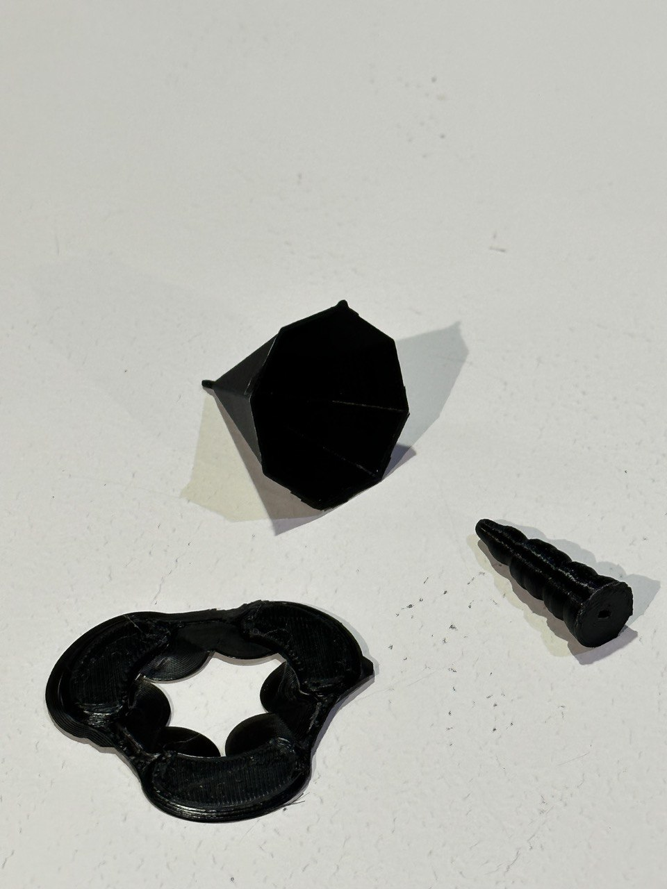
The first is a dildo, generated with this online tool, and slightly modified to be able to use it as an interchangeable module in a project that I may integrate as part of my MDEF interventions (tbd soon). Obviously, this would need to be used as a positive for a mold in order to be usable. In general sexuality, sex positivity, desire, etc are areas of research that seem fruitful and which I will likely explore further in the coming months. In terms of how the model came to be, the (potential and actual) time and effort ‘efficiencies’ on a societal level of parametric design that is open-sourced seem obvious, and the aesthetic of slight complexity (more organic shapes,…) that almost naturally appear when using many of these tools is appealing to me; Modifying it in Rhino to add the nook was a good exercise, and easy enough.
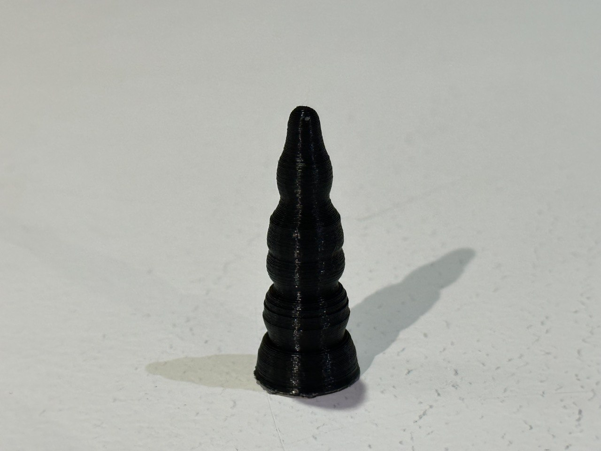
The second is a very simple initial prototype for a humidity collector inspired by the (partly real and partly imagined) use of air vents in various communities. I want to use it in an exploration of humidity collection in my bathroom.
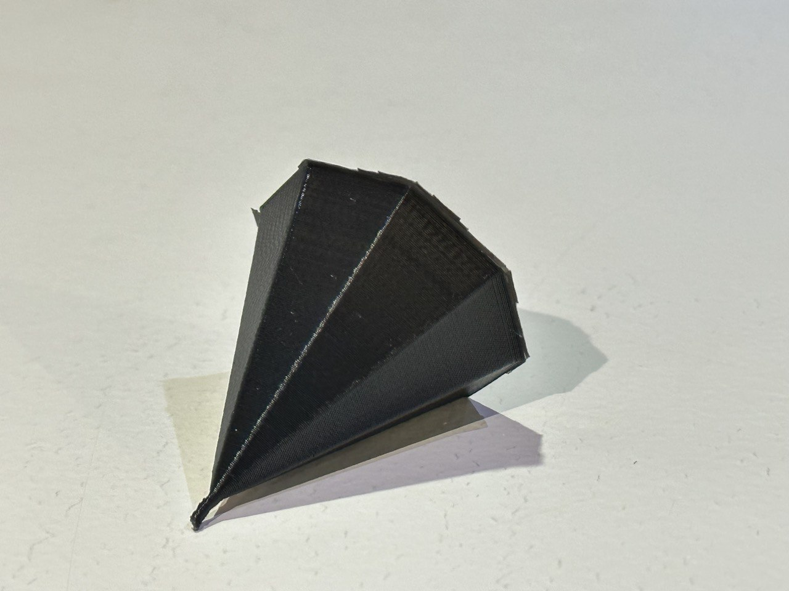
The last one - which is the generative design outcome from was the least successful, because it was a bit hard to remove the supports due to the thin layers making up the connection between the three elements. In this picture, they are not removed yet.
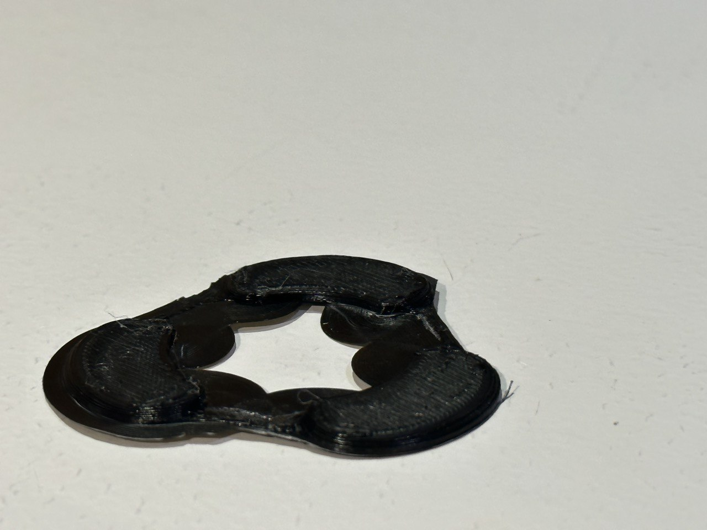
Another thing I printed is a bottle connector to be used in a simple and small hydroponics system. This one I downloaded from 3Dponics. The print is not perfect, and I have not tested it yet because I ran into the somewhat amusing problem of not having plastic bottles to upcycle at home because I only buy cans and glass bottles. This is what the connecting part looks like:
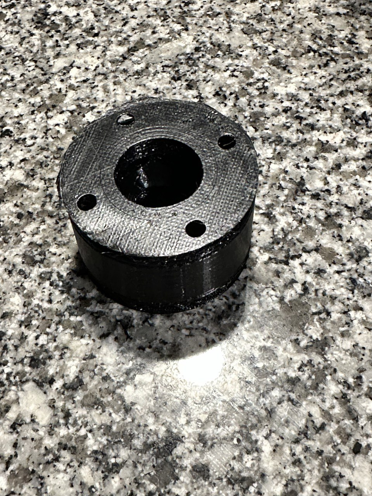
I also had a friend 3D scan my torso (holding a knife because it seemed to fit the somewhat creepy features of scan made with a relatively low resolution scanner like my phone). These are screenshots of the scans:
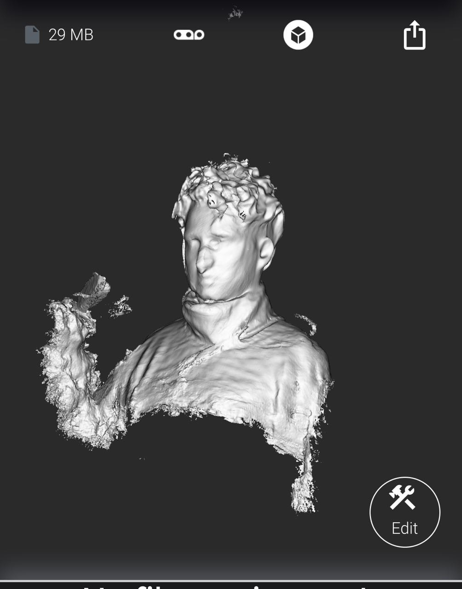
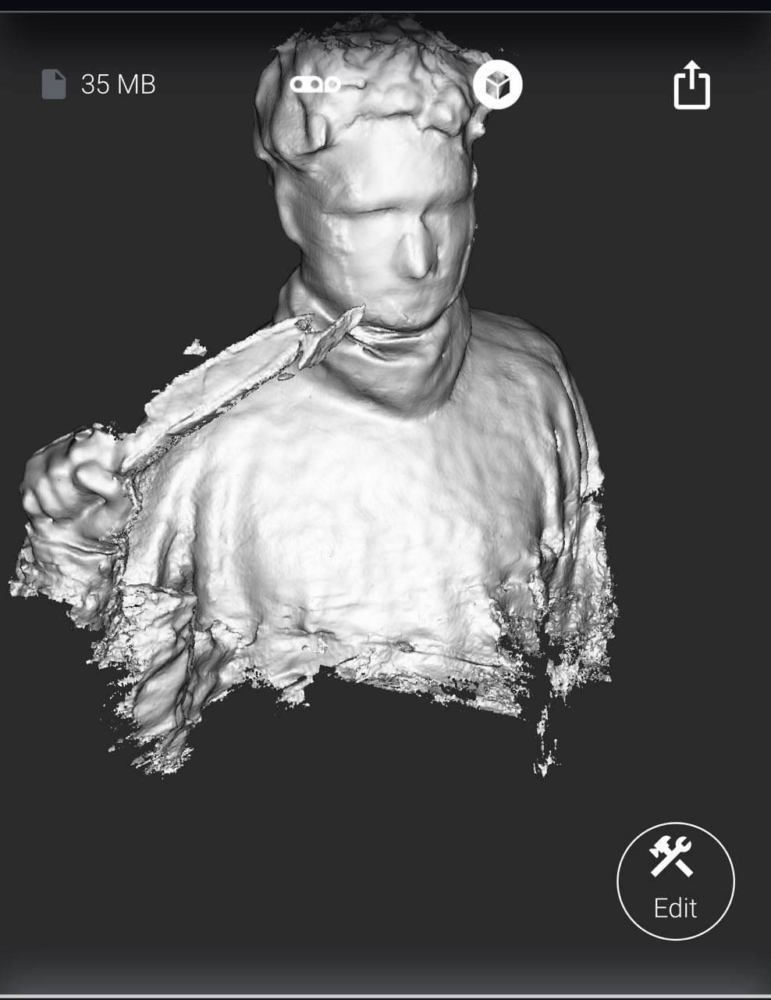
These require some assembly before they could be printed.
networking entirely unlike having drinks with your more successful cousin - day 6¶
In this session on networks in general and Arduino networking we discussed a number of interesting cultural dynamics the ubiquity of the Internet has brought us. One aspect I found especially interesting is the tension between a homogenising tendency (observed by Victor) and the splintering into a myriad of microcultures - the infamous bubbles and echo chambers, but also many wonderfully wierd online communities and cultures - the shifting of much of human interaction into the digital has brought us.
I also thought the point on networked communication boiling down to copying was helpful to understand what is really going on (and not get lost in metaphorical marketing talk like that about ‘the cloud’).
Another thing I want to explore more are the ‘small internets’, like Project Gemini. Though I have not experienced the early internet myself, the vibe of the early days still permeated some of the web as I learned to love it in the 00’s. Along with the wierder corners of ‘web3’, and the maturing of alternative social platforms like Matrix, Mastodon, Secure Scuttlebutt, etc, there is a kind of hope to be found in the awareness that such alternatives are continuously being built in the shell of the old. Projects like Gemini are new to me, so I’m looking forward to exploring them.
We also played with the ESP32 Feathers, and divided into groups which tried to communicate with one another through a Arduino-based network routed through Victor’s laptop. Almost everything worked for the groups, though ours had a particular technical difficulty. At the very end, it was working, but there was no time to test all use cases (the lesson was over).
The way it worked was through a MQTT broker on Victor’s laptop. All participants had ESP32’s that connected to that broker. The protocol, which I didn’t know seemed relatively easy to use, given it’s simple way of functioning, at least in a basic mode. The concept of topics to publish and subscribe - though it may seem convoluted when applied to 1-1 communication - makes a lot of sense in a many-to-one and especially many-to-many use case. Setting up a MQTT client on the Feathers was also quite easy. We followed the steps described here. As is often the case when exploring a somewhat unfamiliar computation-based area, most of the difficulty seems to be in details about configurations, semicolons, etc - the main frustration in an otherwise rewarding exploration.
make with the lights on - day 7¶
This session had a satisfying structure, starting from a simple LED circuit, to which we added step by step throughout the session to make it more complex (using more libraries, tools, etc).
The general programming aspects of it were familiar to me, the Arduino-specific details not so much. I was able to help others at my table make the code work. Initially we tried to add every feature of the pedagogic sequence ourselves into the original code. This turned out to be more or less impossible after the second or third ‘level’. Instead, like everyone, we ended up copy-pasting the recommended code (found on the course docs) and modifying it slightly.
The final stage was about using the MQTT protocol (like we did in an earlier session) to have synchronous LED animations based on choices in a dashboard all could access. This worked, and was fun. To see what it looks like, refer to other student’s websites (what I filmed ended up a bit blurry).
It was fun to take part in this session, and all the steps we went through together ended up working at our table. It strengthened my desire to get back into writing code, and to explore Arduino-based projects specifically. However, I do not have much to say about the details of the process itself. We successfully followed the steps described in the documentation of the course. Please refer to that documentation (linked above) if you wish to reproduce such an exploration.
collets not bullets - day 8¶
This session was especially interesting to me because I had previously had no intimate contact with the topic of CNC mills. So the technical overview was both inspiring and slightly intimidating. Seeing the machine in action, however, made me really want to design for it, and make something with it’s help.
Bits of information in this session that stood out to me:
-
robot arms in industrial manufacturing tend to work like workers in the early stages of industrialsation - repeating the same task over and over again. The story about the robot arm in the FabLab, which works well until it gets into the particular motion it used to perform in it’s previous life in an industrial setting left me wondering (somehwat naively, perhaps) if a rotation of tasks among robots could extend their (industrial?) lifespans, or if there could not be a more simple way of performing the exact same task over and over again (designing a cheaper system that is only able to perform that task, or sets of tasks, but is easy to modify physically). Why use the equivalent of making a 3D printer print the same thing over and over again, instead of making a (metaphorical) adjustable mold? These thoughts may only reflect my lack of domain expertise, however.
-
another thing I wondered about, and did not get a complete answer to in the course was the question of compounding errors. Is there a kind of production which has some space for error tolerance, but which would benefit from the machines making errors not making the same error, which compounds over time, but rather making randomised (and distinct) errors? If the machines were rotated through tasks (like imagined in the previous point), could this have an advantage in terms of absolute deviation from the intended design (because the errors can go in all directions, they nd up closer to the intended shape than if they continued along one particular direction)? Again, the question likely reflects a lack of understanding on my part.
-
It was amusing to hear about all the jargon present in the field of CNCing (like in most others). Being part of a Master’s that absolutely loves jargon, I am not in a position to judge. A lens akin to the sociology of academic disciplines could, however, potentially be fruitfully applied to this.
-
there were a lot of very specific technical details, that I will only really remember once I tried CNC milling out myself. For example, the fact that corners may be round due to the shape of the thing that is not called a bit because it’s not in a manual drill (something which is relevant for press fit designs especially). The same goes for the details of how to give instructions to the machine given a particular curve delineating the design (cutting inside of it, outside of it, centered, …).
-
I was glad to hear about open source tools that are available for designs that are CNC millable. Open Source feels like a testament to human potential like few other things that are distinctly contemporary. For example, Deepnest allows you to nest the things to be cut in a way which minimises material waste (one of the disadvantages of substractive manufacturing like CNC milling). The 50 digital joint collection also looked exciting. I will try some of those out for sure.
I will leave other technical details (which I learned and put in my personal notes) out of this reflection. They can be found in the course presentation itself.
Originally, I planned to do the CNC assignment (doing something with the CNC) as part of the second challenge. The reason is that we were planning on pooling our assigned wood plank resources to make something together with the group.
In the end, however, it turns out that some wood was left, and I wanted to hone my (previously non-existent) CNC skills.
I tried making a flywheel. The idea is to use cans filled with something heavy as weights. The many options, tolerances, etc struck me as more difficult than using a laser cutter or a 3D printer. I’m planning on using the CNC as much as possible in the last trimester to gain the necessary experience to use the machine without feeling lost.
Here are my results (not post-processed yet because I cut it just before leaving for the research trip…).
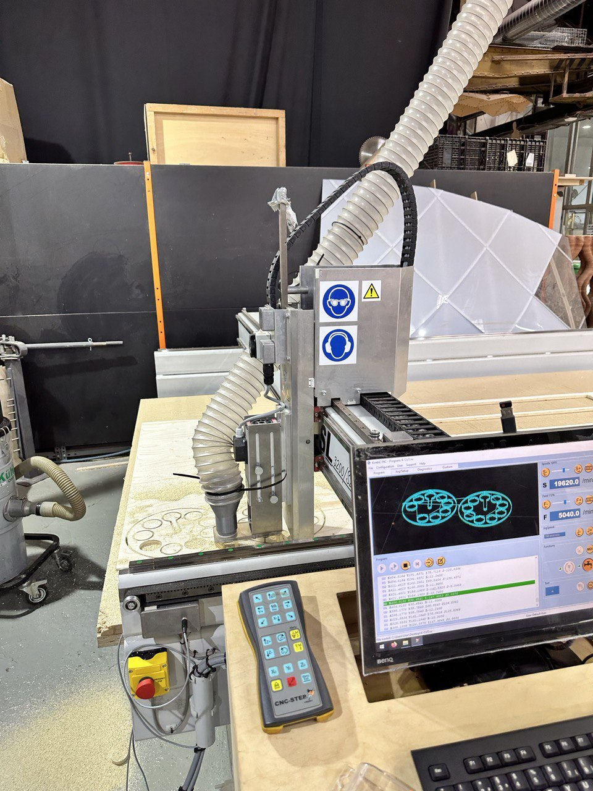 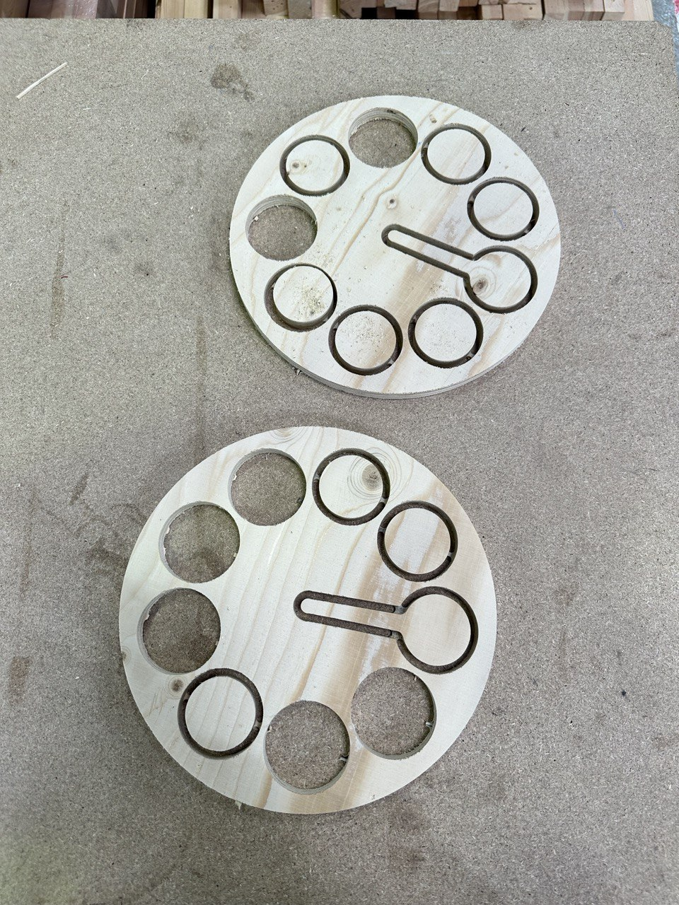
The second challenge - Grey is the new green¶
I wrote most of my thoughts on the second challenge in the collective document
Much like the second trimester in general, a lot of this challenge for me was discovering how involved seemingly simple processes are when it comes to manufacturing. I was expecting this to an extent, but was still a bit surprised. On the other hand, some parts of designing it were surprisingly quick and easy. Overall, it was a great experience to learn about the realities of physical production, and rewarding to make some of our ideas literally tangible.